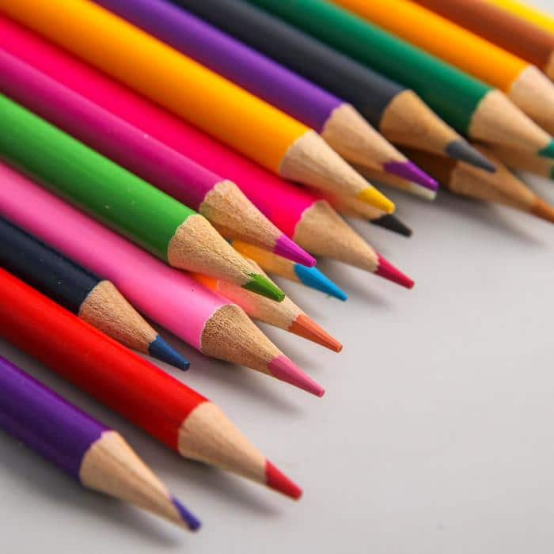
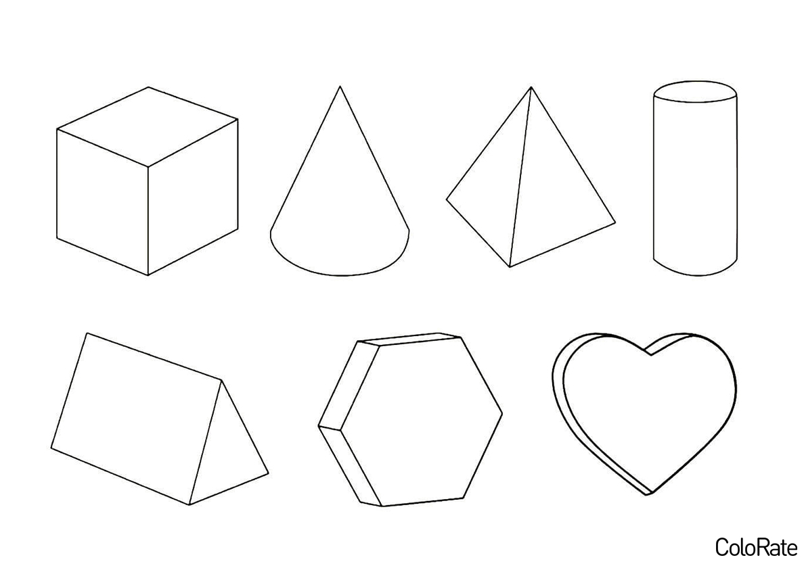
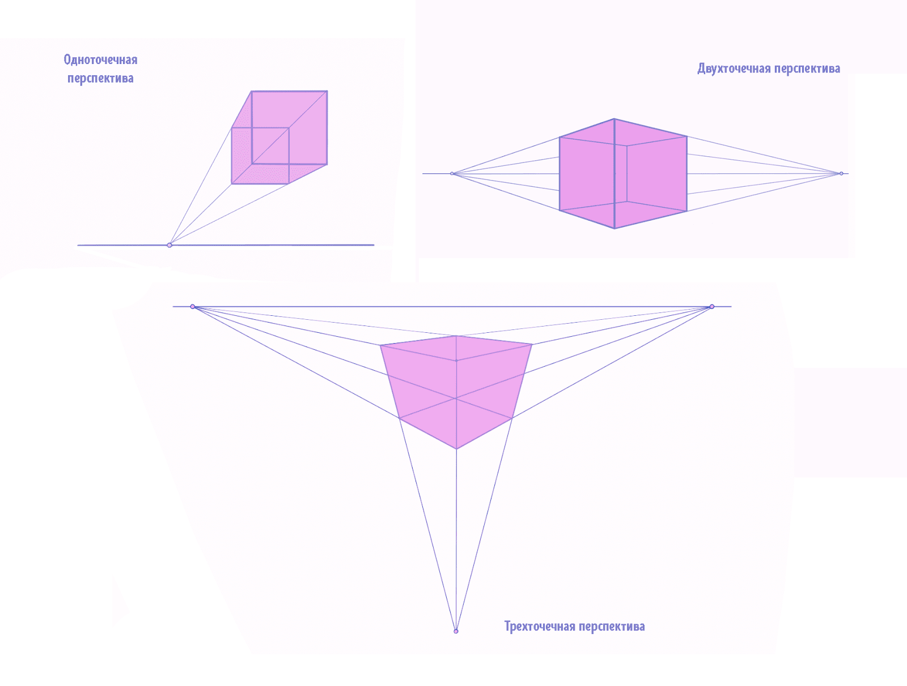
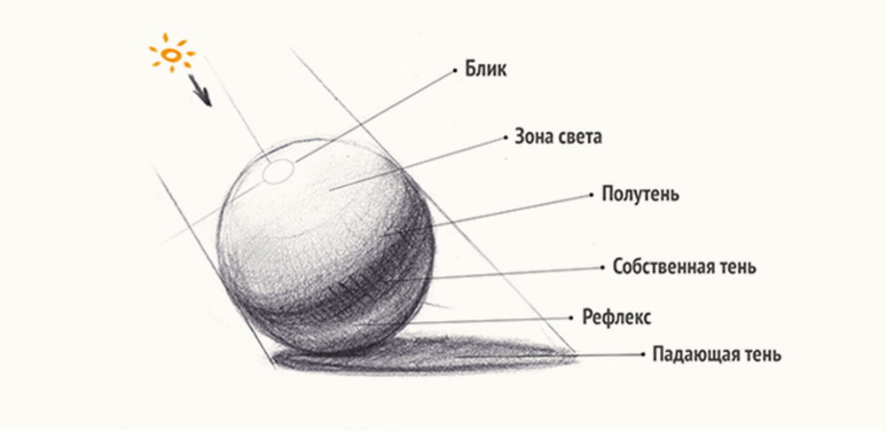
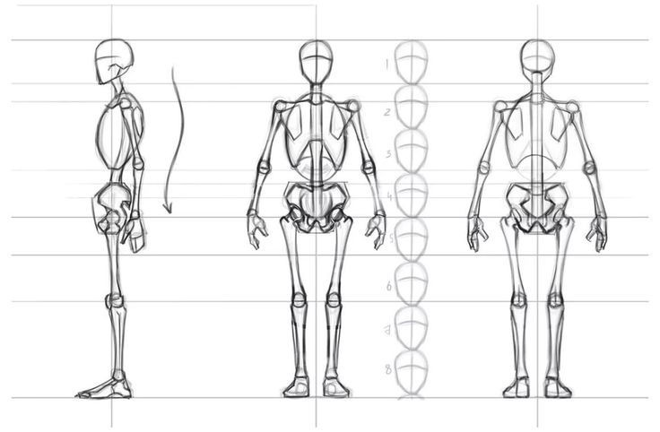

Пошаговый гайд: от простых форм к красивым картинам
ПриступитьРисование — это навык, который развивается практикой. Даже если вы считаете, что "не умеете рисовать" — это можно исправить!
Минимальный набор для старта:
Учитесь строить круги, квадраты, цилиндры и шары — это основа всех сложных объектов.
Перспектива делает ваши рисунки реальными. Начните с одной точки схода на линии горизонта.
Добавляя тени, вы создаете объём. Учитесь видеть, откуда падает свет.
Для рисования людей важно знать простые пропорции и строение тела.
Рисуйте прямые линии, кривые, овалы и круги. Регулярная тренировка руки очень важна.
Упрощайте сложные объекты до базовых фигур — учитесь собирать их вместе.
Попробуйте нарисовать улицу, уходящую в перспективу.
Начинайте с набросков-скелетов, упрощая тело до линий и овалов.
Начинайте рисовать с легких картин, многие начинающие художники начинают рисовать сразу со сложных картин, это неправмльно, так как у человека не достаточно опыта, начиная риосвать с легких картин это помогает набраться больше опыта, а затем уже можно приступать более к сложным картинам.